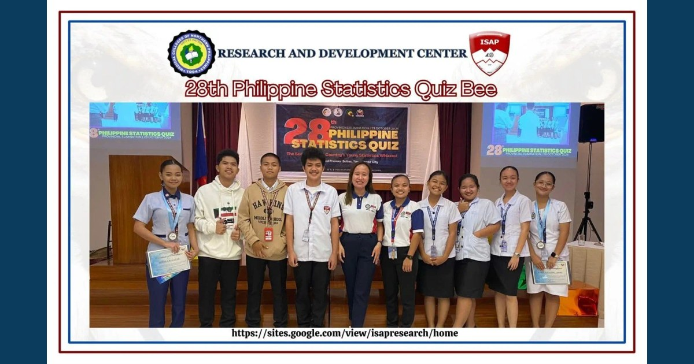

MCNP and ISAP Students Excel in the 28th Philippine Statistics Quiz Bee

Nathaniel M. Acacio of ISAP won first place in the Quiz Bee. Ma. Julianne Tabbu of MCNP placed third and Althea Balanag of ISAP placed fifth in the Digital Poster Making Contest.
Read full article